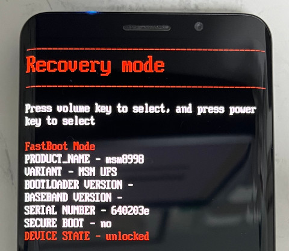
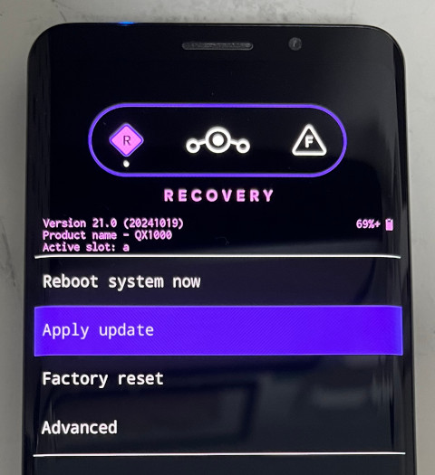
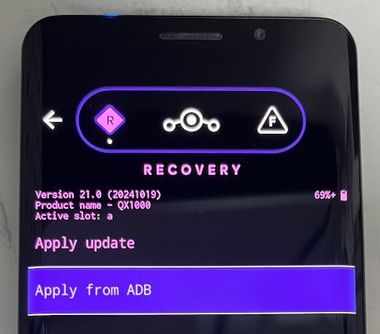
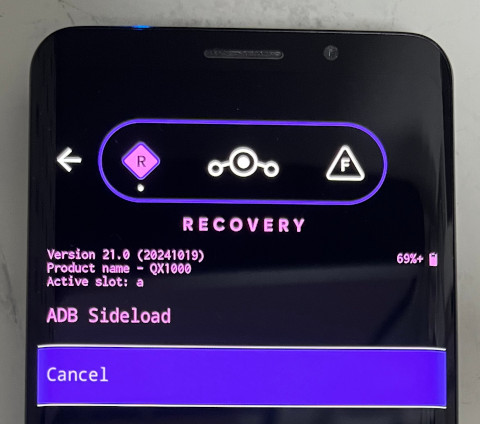
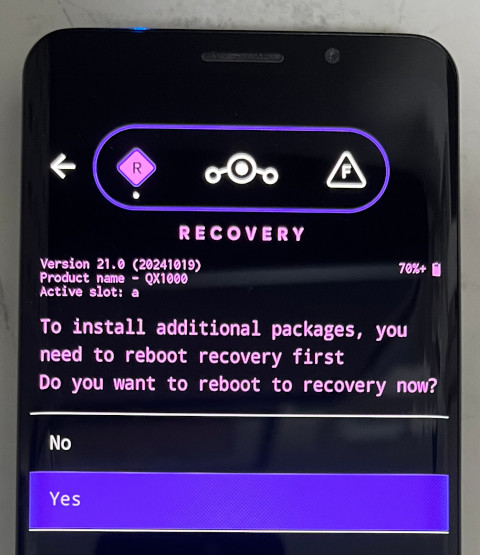
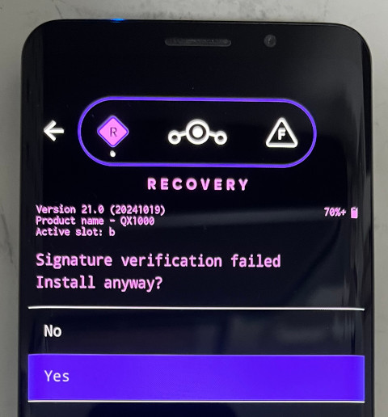
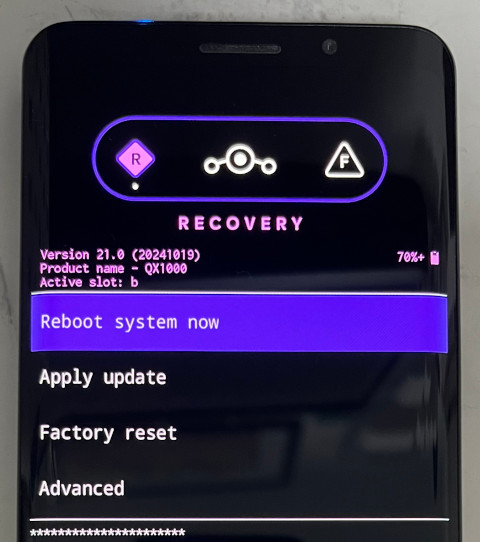

Steward
分享是一種喜悅、更是一種幸福
手機 - F(x)tec Pro1 - LineageOS - 安裝系統
參考資料：
https://wiki.lineageos.org/devices/pro1/
https://download.lineageos.org/devices/pro1/builds
步驟如下：
1. 下載檔案
$ cd $ wget https://mirrorbits.lineageos.org/full/pro1/20241019/boot.img $ wget https://mirrorbits.lineageos.org/full/pro1/20241019/lineage-21.0-20241019-nightly-pro1-signed.zip
2. 按住Vol-後，插入USB，進入Fastboot Mode
3. 更新Boot Image
$ fastboot flashing unlock $ fastboot flash boot boot.img
4. 選擇Recovery Mode後，按下電源按鍵

5. 進入Sideload Mode



6. 刷入lineage-21.0-20241019-nightly-pro1-signed.zip
$ adb -d sideload lineage-21.0-20241019-nightly-pro1-signed.zip

7. 重新進入Recovery後，再度進入Sideload Mode，刷入Gapps
$ adb -d sideload MindTheGapps-14.0.0-arm64-20240925_175633.zip


完成